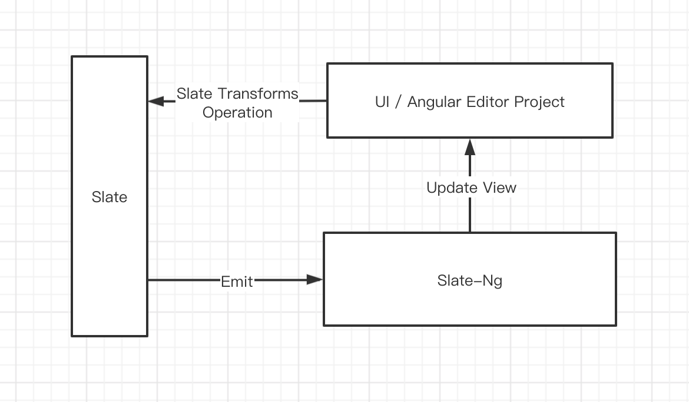

Implementation plan (under revision)
Interactive process

Analysis
The general structure of slate-ng:

From the figure, we can see the general structure of slate-ng. In slate-ng, each Slate Node is regarded as a Component, assembled into
Component Portalaccording to certain requirements, and mounted to the corresponding position for rendering and display. The core point here lies in the logic underChildren. Here are a few points involved:How to get the components corresponding to each node?
How to deal with the component and its children corresponding to each node?
How to pass the context to each dynamic component?
How to optimize the treatment plan?
Then let's go over it bit by bit：
How to get the components corresponding to each node ？
The approach here is different from react, react in by
renderElement,renderLeaf,renderPlaceholderare transmitted to the inner components for processing, but we cannot enjoy the benefits of this approach inslate-ng. So I simplified it to the following transmission and storage (there will be some differences in the implementation of slate-ng as follows, see registry-ns-element:// default store value const defaultStore = { default: DefalutElementComponent, text: TextComponent, leaf: LeafComponent, placeholder: PlaceholderComponent } // create a new Component corresponding to Node @Component({...}) export class ComponentA { static type = 'A' // node component flag } // use service to register this.registryService.add([ComponentA, ComponentB]) // the final store const store = { ...defaultStore, A: ComponentA } // Obtain directly from the object according to the typeHow to deal with the component and its children corresponding to each node?
Here I refer to some processing methods of
reactuse-childrenand create a children component used to recursively traverse the editor data to assemble a complete portal. The code is as follows (simplified code)：resolvePortals(pNode: Ancestor): Array<ComponentPortal<any>> { const children = []; const editor = this.editorService.editor; // ... for (let i = 0; i < pNode.children.length; i++) { const cNode = pNode.children[i] as Ancestor | Descendant; // ... let childPortals = []; let portal = null; if ((cNode as Ancestor).children) { childPortals = this.resolvePortals(cNode as Ancestor); // Important! } // Store childProtals through Injector const providers = [ {provide: CHILD_PORTALS_TOKEN, useValue: childPortals } // ... ]; // ... portal = new ComponentPortal(this.regsitorService.get(type), injector.create(providers, this.injector)); children.push(portal); } return children; } // portals [ ComponentPortalA, ComponentPortalB, ... ]You may find it strange, where is the content of
child? This involves the knowledge ofComponentPortal Injector, which is also mentioned in the previous annotations. That is to say, eachComponentPortalactually carries itschildPortals, you The output ofprotalscan be understood as such a structure (the real structure is definitely not the case, but you can roughly understand that we have such a general structure):[ ComponentPortalA: { injector: { child_token: [ ComponentPortalA0, ComponentPortalA1 ] } }, ComponentPortalB ]Finally, we put it in html for processing and rendering:
<ng-container *ngFor="let portal of showPortals;"> <ng-template [cdkPortalOutlet]="portal"></ng-template> </ng-container>How to pass the context to each dynamic component ？
In fact, we also involved in the second point, that is,
Componentallows passinginjector, we pass the required content throughInjector.create(providers, this.parentInjector)How to optimize the treatment plan ？
There is a problem here, because we will create a new ComponentPortal every time, but be careful, suppose we have a sequence, the structure is as follows:
{ type: 'list', children: [ { type: 'li', ... } ] }If you perform a sequence addition operation, it will add a
litochildren, and a newComponentPortalwill be recreated every time in the previous processing, which means that we need to complete a small change Re-rendering, this is a very high performance problem, so we need to do caching, we only need to make the changednoderecreate a newportal, and the others continue to use the previous ones, code address